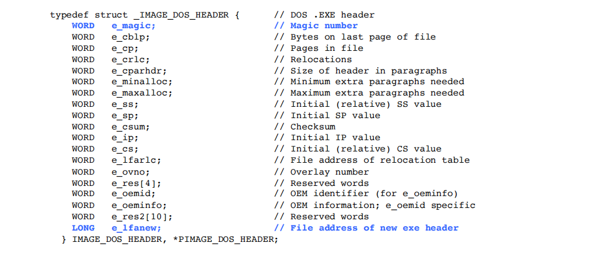

PPPPPE 文件中一些基础的东西，较简单，无深入
基本概念
什么是 PE文件
- Wiki：可移植性可执行文件（英语：Portable Executable，缩写为PE）是一种用于可执行文件、目标文件和动态链接库的文件格式，主要使用在32位和64位的Windows操作系统上。“可移植的”是指该文件格式的通用性，可用于许多种不同的操作系统和体系结构中。PE文件格式封装了Windows操作系统加载可执行程序代码时所必需的一些信息。这些信息包括动态链接库、API导入和导出表、资源管理数据和线程局部存储数据。在Windows NT操作系统中，PE文件格式主要用于EXE文件、DLL文件、.sys（驱动程序）和其他文件类型。
- 自己的理解：PE 文件是由操作系统或者内核去加载并且按照一定规则去运行的一个协议，这个协议告诉操作系统自己是 PE 文件，自己该如何运行以及有什么安全规则的设置
文件(file) and 映像(image)
-
文件：存储在磁盘上的形式
-
映像：文件被拷贝到内存中时存在的形式
PE结构的三种地址
- VA：虚拟地址
- RVA：相对虚拟地址
- FOA：文件偏移地址
RVA=VA - 基址
目标点RVA - 目标点所在节区起始的RVA地址 =目标点FOA - 目标点所在节区起始的FOA地址
PE文件结构
总共可以分成三部分：
- 文件头(包括DOS头和PE头)
- 节区
- 各种属性表
PE头部结构体详解
pe文件中的各种属性都是由结构体来进行描述的
Dos头
里面一般有两个结构体变量
- DosHeader
- DosStub
比较重要的是 DosHeader，以上两个变量分别由以下结构体所定义
typedef struct _IMAGE_DOS_HEADER——>DosHeader

- e_magic：值为MZ，算是一个标志位
- e_lfanew：值为 PE 头的文件偏移
struct IMAGE_DOS_STUB DosStub——>DosStub
又叫 dos 存根，大部分 Windows 程序都会包含 dos 存根
作用在dos模式下输出 “This program cannot be run in DOS mode”
PE头
里面只包含了一个结构体变量
- NtHeader
该变量由以下结构体所定义。
typedef struct _IMAGE_NT_HEADERS——>NtHeader
-
Signature：标志位，值为 0x00004550 对应的 ascll 码值为 “PE”
-
FileHeader：是一个结构体变量，定义它的结构体内容如下：
-
Machine：程序运行所需架构，从该处可以推断程序为32 bit / 64 bit。
-
TimeDateStamp：记录程序链接的时间，Unix时间戳。
-
NumberOfSections：记录程序有多少个节区头 (section headers)，节区头的数量等于节区数量。
-
SizeOfOptionalHeader：指出 OptionalHeader的大小，由于32位和64位的大小不同，有所出入，因此需要特别指明。
-
characteristic：其实它也是个结构体变量，只是这个结构体的大小只占了1个 word，这个结构体所包含的内容是对这个文件信息的描述。以下为结构体的定义内容：
如果文件具有该属性就将对应位的值置为1。
-
-
OptionalHeader：还是一个结构体变量，而且这个结构体非常非常的 big，32位和64位有差别，有许多重要的属性
32位所定义的结构体

64位所定义的结构体
-
Magic：决定二进制文件是 PE32 还是 PE32+
- PE32 32bit 0x10C
- PE32+ 64bit 0x20B
-
AddressOfEntryPoint：程序入口点的RVA。程序入口点就是这个 PE 文件被拷贝到内存中成为映像后最先被执行的代码地方。
-
SizeOfImage：二进制文件载入内存中时所需的空间大小。
-
SectionAlignment：内存中 section 进行对齐的最小单位。对齐是为了加快寻址的速度，有点时间换空间的意思
-
FileAlignment：文件中每个 chunk 的最小对齐单位。
-
ImageBase：二进制文件被在载入到内存中的基址。基址+相对虚拟地址(可以和上面的 SectionAlignment 联系起来)=绝对虚拟地址，举个例子
这里还会涉及到基址重定位的问题，埋坑明日填。
-
DLLCharacteristics：结构体变量，确定一些关键安全选项，例如：ASLR，non-executable memory(DEP)。不仅仅描述 dll文件。结构体定义如下，和前面 FileHeader.Characteristics 类似
其中的 IMAGE_DLLCHARACTERISTICS_DYNAMIC_BASE 决定了 DLL 在加载时是否可以重定位，如果不进行重定位的话，那么文件加载进内存中的基址和 OptionalHeader 中的 ImageBase 是一样的，32位中该值一般为 400000h。
-
DataDirectory：结构体变量，结构体定义如下
注意点：这里的VirtualAddress实际为RVA，并不是VA。
-
Size：结构体变量，结构如下，和前面两个类似
-
-
节区
Secsions，总的可以分成两个部分
- Section Header[ ]
- Section itself
需要重点关注的是 section header。
struct IMAGE_SECTION_HEADER ——>Section Header[ ]
section header 就是描述下面 section itself(节区自己本身) 的一个字段，是一个结构体数组变量，数组的大小对应节区的数量。
结构体定义如下：
-
Name[8]：一个存放 ascll 字符的 byte 数组，不一定以 ‘\0’ 结尾。
-
Misc.VritualSize：变成映像后所占的大小
-
VirtualAddress：相对于 OptionalHeader.ImageBase 的 rva，就是相对于基址的偏移地址
-
SizeOfRawData：在文件中的大小
-
PointerToRawData：节区数据在文件中的 offset，数据在文件中的偏移
-
Characteristics：节区属性，是一个结构体变量，与 FileHeader.Characteristics 类似，由以下结构体所定义
其中 Misc.VritualSize 和 SizeOfRawData 这两者的大小是不确定的，原因如图，我也不是很懂
至此，PE文件 头部结构体也就了解的差不多了。
数据目录相关结构体详解
在 pe 文件中除了 pe 头部描述 pe 文件格式的结构体之外，还有一些和 pe 文件相关的结构体不在 pe 文件的头部，而是分散在各个节数据当中。各个节数据的位置在 由 IMAGE_OPTIONAL_HEADER 结构体所定义的 OptionalHeader(可选头部) 中的 DataDirectory(数据目录) 结构体数组中指出。
数据目录包含了 导出表、导入表、重定位表等重要的结构供 pe 文件装载时使用，以下介绍的是数据目录中导出表里较为重要的结构体。
_IMAGE_IMPORT_DESCRIPTOR
结构体定义如下：
- OriginalFirstThunk： INT的RVA/导入函数名称(序号)的RVA。它本质上其实是一个指针指向 INT 的相对虚拟内存地址，INT是一个元素为 IMAGE_THUNK_DATA 结构体的数组。
- Name： 模块名称字符串的 RVA。
- FirstThunk： IAT的RVA/导入地址表的RVA。
INT 和 IAT 的联系和区别
_IMAGE_THUNK_DATA
结构体定义如下(以32位为例)：
- Function： 指向导入函数的函数地址
- AddressOfData： 指向 IMAGE_IMPORT_BY_NAME 结构体定义的结构体数组的 RVA
_IMAGE_IMPORT_BY_NAME
结构体定义如下：
- Hint： 函数序号，即 ordinary 数组的 index。 //不是很懂，但不成大问题
- Name： 导入函数的函数名称，以 ‘\0’ 为结尾。
三者之间的关系
如图所示
简单来说就是结构体里面有变量用于存放其他结构体的指针，然后有调用的关系。
本文作者：GhDemi
本文链接： https://ghdemi.github.io/2022/06/13/PE%E6%96%87%E4%BB%B6/
文章默认使用 CC BY-NC-SA 4.0 协议进行许可，使用时请注意遵守协议。